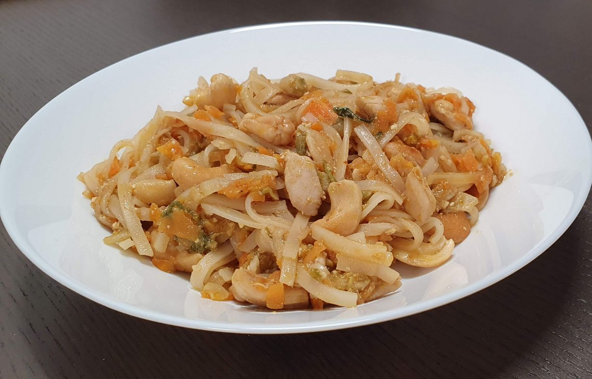

Pad Thai with Cashews
metadata
Created on 2020-04-13 Last updated on 2020-08-16
Estimated time needed: At least 14 minutes. At most 36 minutes.
Ingredients
| 300 | g | chicken | ||
| 200 | g | bean sprouts | ||
| 175 | g | carrot | ||
| 150 | g | heart salad | 150 g is ≈ 1 head. | |
| 90 | g | rice noodles | dry | |
| 85 | g | cashew nuts | ||
| 60 | g | tamarind paste | 60 g is ≈ 3 tbsp. | |
| 40 | g | brown sugar | 40 g is ≈ 3 tbsp. | |
| 25 | g | garlic | 25 g is ≈ 3 to 6 cloves. | |
| 10 | g | chili paste or red thai cury paste | 10 g is ≈ 1 tsp. | |
| 10 | g | soy sauce | 10 g is ≈ 1 tbsp. | |
| 7 | g | fish sauce | 7 g is ≈ 1 tbsp. | |
| 3 | tbsp | plain cooking oil | ||
| 0.5 | tbsp | sesame oil |
Scaling
Timeline
Directions
⌛ Active time 3 minutes
- 60 g tamarind paste | 60 g is ≈ 3 tbsp.
- 40 g brown sugar | 40 g is ≈ 3 tbsp.
- 10 g chili paste or red thai cury paste | 10 g is ≈ 1 tsp.
- 10 g soy sauce | 10 g is ≈ 1 tbsp.
- 7 g fish sauce | 7 g is ≈ 1 tbsp.
Make sauce:
Mix the ingredients together and set aside. You can adjust the ratios to taste. If it is difficult to combine you can add some water.
⌛ Active time 1 minutes | Passive time 10 minutes
- 90 g rice noodles | dry
Boil Rice Noodles:
Start boiling the rice noodles while you fix other things. Once they are done you can just set them aside until you need them, it won't matter if they become cold.
⌛ Active time 3 minutes
- 150 g heart salad | 150 g is ≈ 1 head.
Shred salad
⌛ Active time 5 minutes
- 175 g carrot
Shred carrot:
Peel and cut the carrot into small strips, about a finger in length.
⌛ Active time 3 minutes
- 25 g garlic | 25 g is ≈ 3 to 6 cloves.
Finely chop garlic
⌛ Active time 2 minutes
- 300 g chicken
Shred chicken
⌛ Active time 1 minutes
- 3 tbsp plain cooking oil
- 0.5 tbsp sesame oil
Fry carrot and garlic until fragrant
⌛ Active time 5 minutes
- 200 g bean sprouts
- 85 g cashew nuts
Add chicken and vegetables:
Add the chicken, salad, bean sprouts, and cashews. Fry until you are content with how well the chicken is done.
⌛ Active time 3 minutes
Add noodles and sauce:
Add the noodles and sauce, and fry for a couple of minutes.